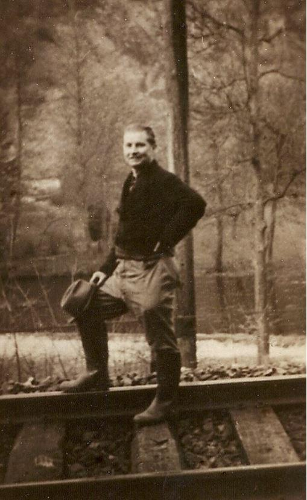
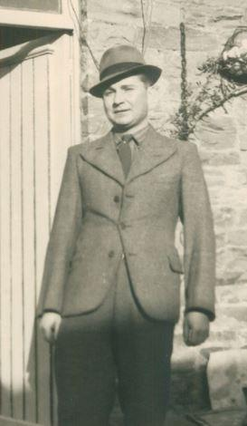
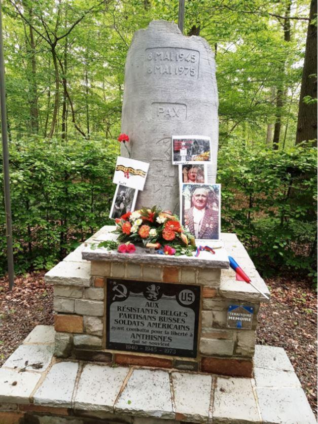
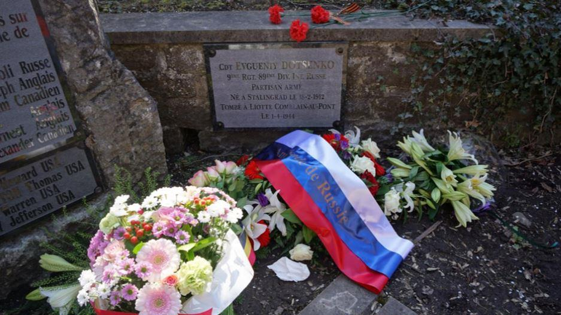
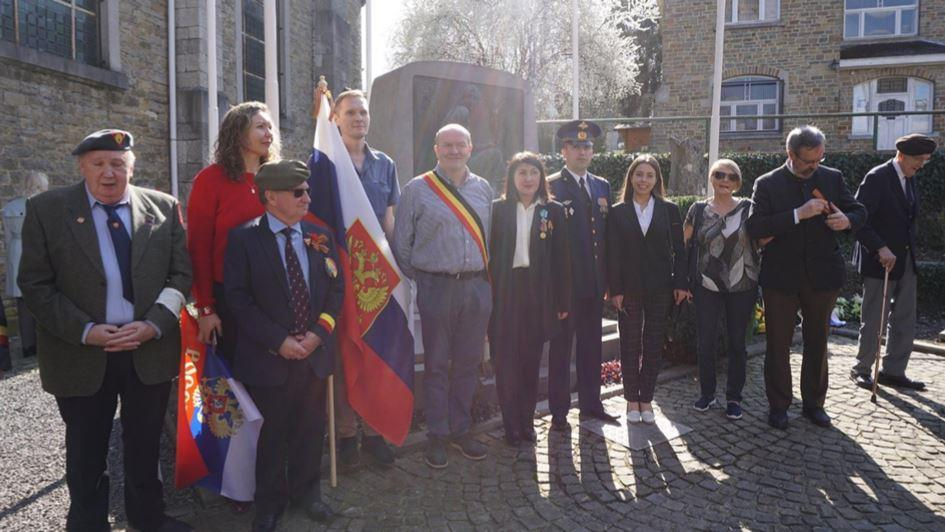
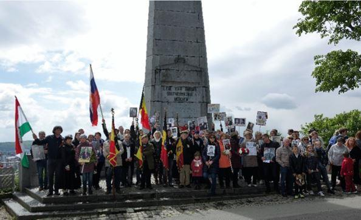
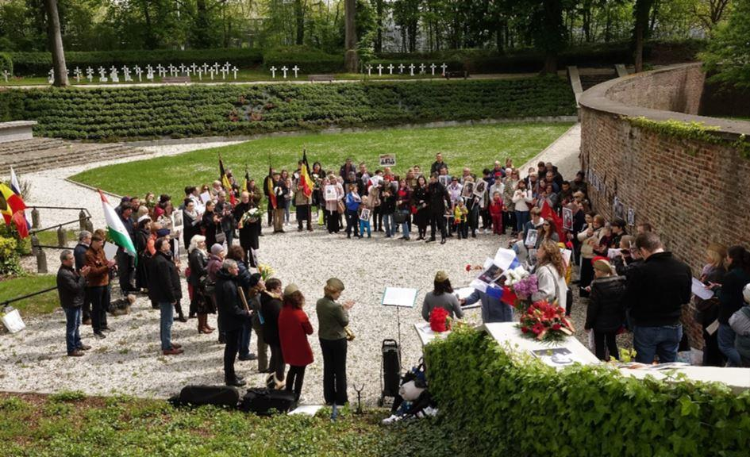

Durant les quatre premiers mois de 2019, les commémorations patriotiques qui se sont déroulées à Liège et dans les environs ont été l’occasion de commémorer le souvenir du résistant Evgenij Dotsenko, toujours bien présent dans le cœur des habitants de Comblain (20 km de Liège), haut lieu de la résistance à l’occupant. Il y a 75 ans, il tombait sous les balles de la Wehrmacht.
Yevgeny Dotsenko et son épouse enceinte Lyudmila, séparés au début de la guerre, ils ne se reverront jamais
PETIT RAPPEL HISTORIQUE
Après la capitulation de l’Armée belge (28 mai 1940), quinze mouvements de résistance se sont développés. Dans la région qui nous intéresse, au sud de Liège, l’Armée Belge des Partisans (le bras armé du Front de l’Indépendance) et l’Armée secrète occupent majoritairement le terrain. L’Armée secrète est née en 1940, de la volonté de militaires qui refusaient de déposer les armes. Dépendants du gouvernement belge de Londres, elle avait pour mission de désorganiser les Nazis, d’organiser un soulèvement à la Libération et avait une mission de renseignements. Le Front de l’Indépendance, quant à lui, est fondé en 1941. Dirigé par un comité comptant un représentant de chaque parti, il compte un grand nombre de communistes. Ils ont été rejoints par l’Armée Belge des Partisans et est devenu le mouvement le plus important.
En 1942, de nombreux prisonniers soviétiques sont envoyés en Belgique, où ils servent de main d’œuvre dans les charbonnages. Certains parviennent à s’échapper et se dispersent dans la région liégeoise. Si la plupart sont bien accueillis par la population, d’autres sont obligés de se cacher. Parmi eux, le Commandant Dotsenko, né à Tsaritsyne (future Stalingrad) le 18 février 1912. Il perd son père en 1924 et part travailler sur les chantiers navals de la Volga. Il y devient membre des Komsomols. Envoyé dans un Centre politico-militaire de Moscou, il y est élu Secrétaire de cette organisation de jeunesse. Affecté comme officier lors de la guerre finno-soviétique de 1940, il rejoint un régiment de gardes-frontières peu après son mariage. Le jour de l’invasion, en première ligne, il est blessé et fait prisonnier. Il est envoyé au camp de Müllheim-am-Rhein où les conditions de détentions sont extrêmement dures. Avec son ami Ligosubenko, grâce à une lime de fortune, ils scient les barreaux de leur cellule et franchissent le Rhin, traversant la Hollande avant de se cacher à Liège. Logeant derrière la Kommandantur, ils sont dénoncés par des voisins et se réfugient vers le sud de la ville. Campant dans la forêt, ils sont découverts par un garde-chasse qui les confie au Front de la Résistance.
Dotsenko se met alors à l’étude du français et se montre un élève relativement doué. Le Soviétique fait aussi preuve d’une témérité proche de l’inconscience : il tient un journal intime dans lequel figurent sa photo et celle de son compagnon de combat Ligozubenko. Le carnet tombe aux mains de l’ennemi qui placarde des avis de recherche proposant une récompense de 500.000 francs belges (ce qui correspond à peu près à la somme de 150.000 € actuels).
Une des premières tâches de Dotsenko est la préparation et la distribution de tracts, ce qui le rend fort populaire auprès des villageois. Une autre de ses fonctions était le vol et la restitution des tickets de rationnement. Lors d’une mission, il subtilise la mitraillette d’un soldat de la Wehrmacht pour alimenter l’arsenal du réseau.
Il loge à l’époque chez le jeune couple Hamoir-Minglet. Le Commandant principal du 4e régiment des Partisans Armés est Jean-François Commard, Le groupe russe de Poulseur est composé d’une cinquantaine d’hommes dirigés par Vladimir Vologomenko (« Billy »), Ligousobenko (« Franco ») et Dotsenko, alias « Jean-le-Poète », L’A.B.P. décide de créer des groupes multilingues dont Dotsenko devient le commissaire. Il côtoie d’autres groupes dont celui du futur vulcanologue mondialement connu Haroun Tazieff.
Les actions, financées par l’attaque de convois et le racket des collabos se multiplient. On en dénombre trois cent entre octobre 1943 et avril 1944. Est-ce une prémonition ? Dotsenko gardait son trench-coat « à la Bogart » par tous les temps, afin d’y cacher son pistolet. Le 1er avril 1944, accompagné de résistants belges, il participe à une expédition punitive contre un délateur. Arrivé sur place, ils sont accueillis par un feu nourri. Ils infligent de lourdes pertes à l’ennemi mais, à court de munition, le résistant est abattu en traversant la rivière Amblève. Son corps est jeté dans la fosse commune de la Citadelle.

Yevgeny Dotsenko chez les Belges qui l'ont hébergé - Léon et Georges Amuar
Il est inhumé après la guerre à la pelouse d’honneur de Comblain-au-Pont. Notons qu’à quelques mètres de sa tombe repose l’abbé Joseph Peeters1, curé de la paroisse fusillée pour espionnage au profit des Alliés.
Quelques kilomètres plus loin, le fût du monument du lieu-dit « les Stepennes » représente un morceau du tronc d'arbre gravé par Dotsenko, qui fut offert au Musée de Volgograd. Aux alentours, d’autres arbres gravés par les soldats soviétiques ont été conservés.
Le 30 mars 2019, une semaine après le Jour du Défenseur de la patrie (au Monument interallié)2 a eu lieu une autre cérémonie : l’inauguration de la plaque commémorative en hommage au Cdt Dotsenko, restaurée et érigée au centre de Comblain. Dressée à l’origine par des villageois et des Soviétiques à l’endroit même où il a été abattu, elle s’est retrouvée, au cours des années, sur un terrain privé et avait subi les outrages du temps3.
La cérémonie s’est déroulée en présence d’une délégation de l’Ambassade, des membres de l’association « Meridian », du « Cercle Historique des anciens Sous-officiers d’Ourthe-Amblève » et de nombreux citoyens belges et russes. À cette occasion, l’attitude du maire a quelque peu étonné les participants. Il a tout d’abord déclaré : « Il ne faut pas que nos enfants revivent les atrocités que nos parents ont connu il y a quarante ou cinquante ans (sic !). Ce qui, selon nous, situe l’agression nazie entre le premier pas de l’homme sur la Lune et l’avènement de la mode disco. D’autre part, face aux diplomates et aux anciens militaires, élégants et distingués, l’homme politique s’est présenté en bras-de-chemise, le blue-jean en accordéon, l’écharpe mayorale distendue sur l’abdomen. Une dame BCBG lui a fait remarquer que sa tenue n’est pas très appropriée, ce à quoi il a répliqué : « c’est parce qu’il fait bon ! ». « Très bien ! dit alors la dame. Et si on était en été, vous auriez mis un bermuda ? ». A suivi un vin d’honneur durant lequel un court reportage russe a été projeté… mais dont le son était couvert par les bavardages des élus locaux. Espérons, comme dit le sportif, qu’il fera mieux la prochaine fois et que nous n’aurons plus à assister à ces scènes dignes de « Fantasia chez les ploucs ».4

LE RÉGIMENT DES IMMORTELS EN BORD DE MEUSE
Le 4 juin, Sergeij V. Lavrov déclarait : « De nouveau, pas seulement en Russie mais également dans bien d'autres pays : des marches du Régiment immortel, une initiative civile qui a atteint une ampleur mondiale. Des centaines de milliers de Russes, de compatriotes et des citoyens d'autres pays y ont participé - tous ceux qui chérissent la mémoire de la Victoire et la mémoire de ceux qui y ont contribué5 ».
Effectivement, depuis 2012, la manifestation patriotique russe a franchi les frontières : « Spoutnik » annonçait des manifestations dans 110 pays, dont la Belgique fait partie. La manifestation, qui se déroule à Anvers, Gand et Liège rassemble des centaines de participants, russes et autochtones. Organisé pour la deuxième fois à Liège par l’association « Meridian », elle a démarré d’un endroit symbolique : l’Enclos des Fusillés de la Citadelle6. On a pu constater la participation de citoyens belges, brandissant des portraits de combattants et de résistants. Cette manifestation a fait l’objet d’un reportage de la chaîne de télévision russe TV REN-47.
Le défilé a lieu chez nous le dimanche précédant le 9 mai. Les Russes de Belgique sont souvent étonnés que le 8 mai ne soit pas un jour férié. En fait, tous les pays ne fêtent pas la victoire le même jour. Ainsi, aux Pays-Bas, elle est fêtée le 5 mai, jour de la libération du territoire.
Le 8 mai a été déclaré jour férié en France dans les années cinquante. Supprimé, il a été réinstauré en 1981. En Belgique, la date n’a pas de lien direct avec les événements nationaux. Notre pays a été libéré en septembre 1944 et partiellement envahi lors de l’Offensive Von Rundstedt (décembre 1944 - janvier 1945).
Le 8 mai n’a jamais été un jour férié généralisé, seules les écoles et les administrations en bénéficiaient. En 1983, le gouvernement a décidé de le supprimer pour des raisons budgétaires. Le 11 novembre 1918 a par contre un rapport direct avec notre histoire : les Allemands étaient encore en Belgique. Ils ont été refoulés et nos troupes ont participé à cette victoire.
2. De style Art-déco, le Mémorial Interallié a été construit par Joseph Smolderen (1928). Il est constitué de l'église du Sacré-Cœur et d'une tour comme monument civil. Liège, en tant que première ville à s'être opposée efficacement aux envahisseurs a été choisie en 1925 par la Fédération Interalliée des Anciens Combattants comme lieu d'édification d'un monument.
3. Les tombes des prisonniers de guerre et des partisans morts en Belgique pendant la Seconde Guerre mondiale sont recensées sur une page du site de l’Ambassade de Russie : https://belgium.mid.ru/fr_FR/zahoronenia-voennoplennyh-i-partizan-pogibsih-vo-vrema-vtoroj-mirovoj-vojny-v-bel-gii?p_p_id=101_INSTANCE_kKAXcHGTUeFm&p_p_lifecycle=0&p_p_state=normal&p_p_mode=view&p_p_col_id=column-2&p_p_col_count=2&_101_INSTANCE_kKAXcHGTUeFm_struts_action=%2Fasset_publisher%2Fview
4. Roman de Charles Williams (Gallimard, 1957) adapté au cinéma par Gérard Pirès (1971).
5. "Sur la Journée de la Victoire", « Mejdounarodnaïa Jizn », 4 juin 2019. http://www.mid.ru/ru/foreign_policy/news/-/asset_publisher/cKNonkJE02Bw/content/id/3667595?p_p_id=101_INSTANCE_cKNonkJE02Bw&_101_INSTANCE_cKNonkJE02Bw_languageId=fr_FR&fbclid=IwAR3dArMypL0epSgSCYysHRCdHoNknKJU5l9L89aq_zhRtHw0nc1lqRVms7Q
6. L'Enclos des Fusillés est un cimetière situé dans le parc de la citadelle qui compte 415 tombes de personnes abattues par les Nazis ainsi que celle de l’aumônier de la citadelle. L’enclos est suivi de la pelouse d'honneur avec l'endroit des poteaux d'exécution, un enclos muré, dit « place d'arme », avec le souterrain par où arrivaient les condamnés et un deuxième enclos qui a servi de lieu d'exécutions et de fosse commune. La citadelle proprement dite a été démolie faire place à un hôpital.
Partager cette page